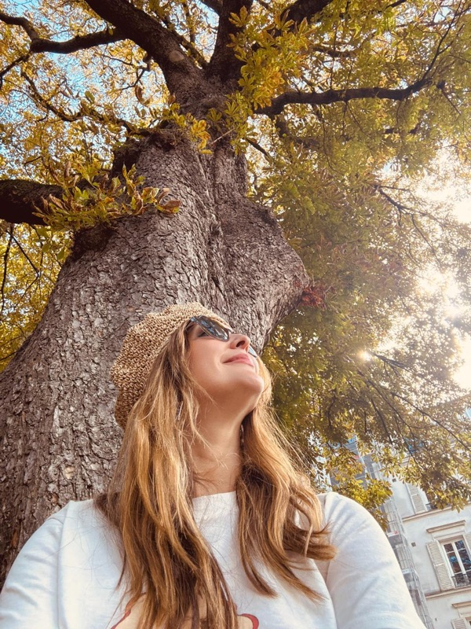
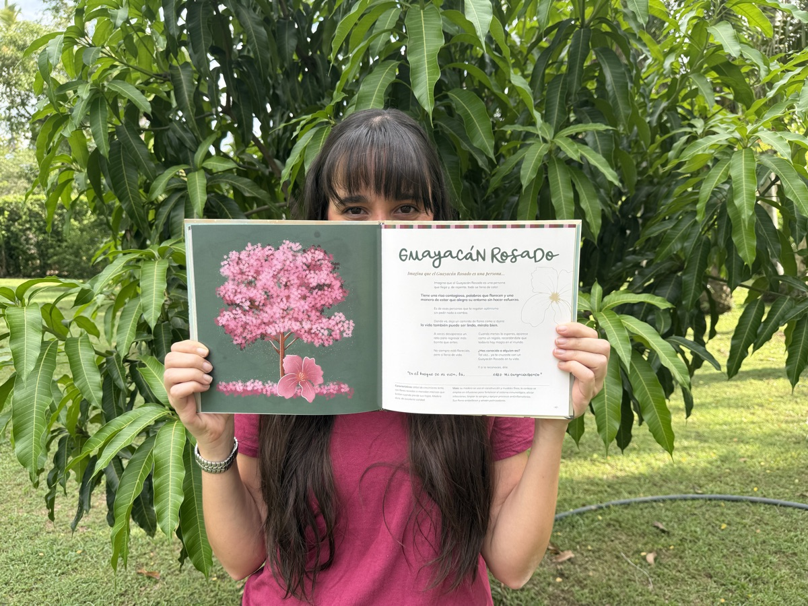
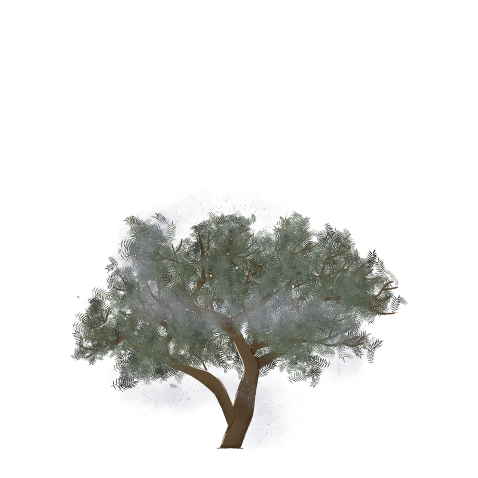
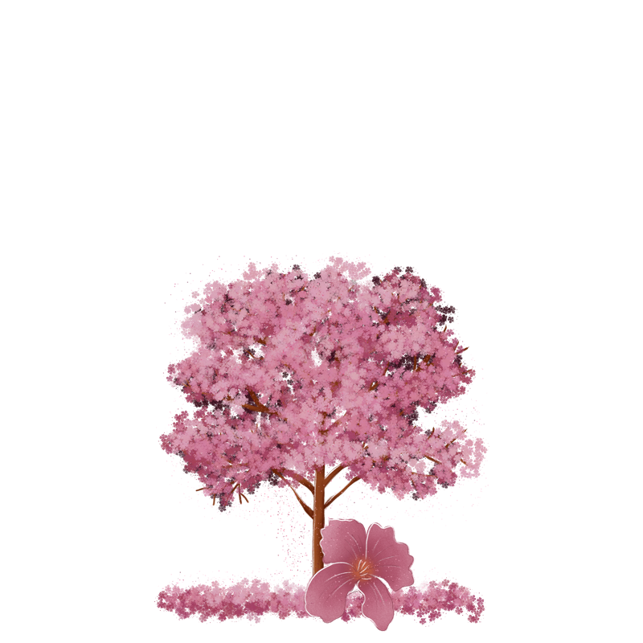

Soy Susy, negociadora internacional y exploradora de mundos visibles e invisibles.
Me apasionan los idiomas, las culturas, el bienestar y, profundamente, la naturaleza. Desde niña he creído en la magia, y hoy vivo mi vida como un ritual sagrado, donde cada momento tiene un sentido y cada encuentro guarda un propósito.
En la naturaleza encuentro el regalo más hermoso que Dios nos dio, y en ella descubro, una y otra vez, pistas sobre lo que realmente importa... sobre lo que vale la pena.
Mi propósito es compartir con el mundo esa forma de ver la vida:
una mirada más consciente, más sensible...
y, sobre todo, llena de amor.
Soy Isa. Y siempre he creído en la magia.
En la magia de mirar el cielo y quedarme un rato viendo las estrellas. En el destello de la luz sobre el agua, en la luna cuando aparece sin avisar, en esas pequeñas señales que a veces solo uno decide ver.
Desde chiquita siento que el mundo tiene algo más. Como si todo estuviera vivo de una forma que no siempre sabemos explicar.
Cuando ilustro, intento quedarme un poquito más en ese instante, en ese brillo, en esa sensación que aparece cuando algo te llena y no sabes muy bien por qué.
Creo que la magia no es fantasía. Es atención. Es detenerse lo suficiente para creer.
Y yo todos los días elijo creer.


Un lugar donde aprender a ver distinto. Donde los árboles tienen personalidad. Donde la imaginación no es ingenua, sino memoria. Donde crecer no significa dejar de creer.
Un espacio para caminar más despacio, para reconocer a quienes amamos en lo que nos rodea, y para recordar que también somos naturaleza.
Si tú también sientes que el mundo tiene algo más, bienvenido al bosque.
